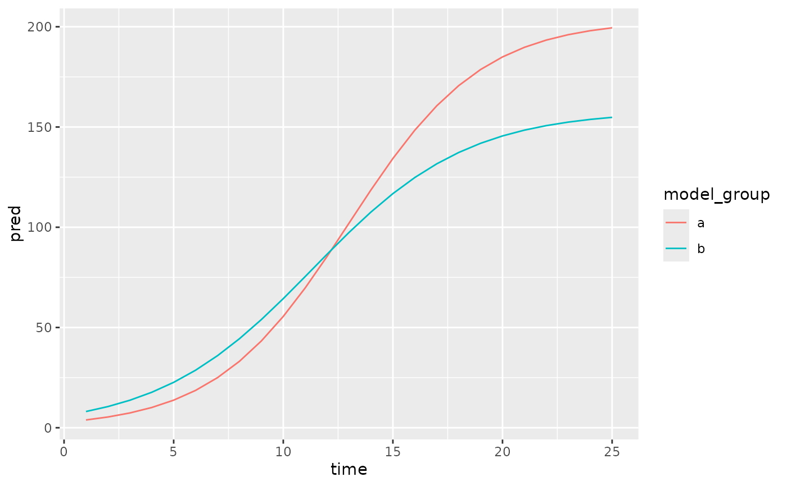

Show a model fit with pcvr in a ggplot layer
Source:R/stat_brms_model.R, R/stat_growthSS.R, R/stat_nlme_model.R, and 2 more
stat_growthss.RdAdd a model fit with growthSS and fitGrowth to a ggplot object. The exact geom used depends on the model class (see details).
Usage
stat_brms_model(
mapping = NULL,
data = NULL,
fit = NULL,
ss = NULL,
CI = 0.95,
inherit.aes = TRUE,
...
)
stat_growthss(
mapping = NULL,
data = NULL,
fit = NULL,
ss = NULL,
inherit.aes = TRUE,
...
)
stat_nlme_model(
mapping = NULL,
data = NULL,
fit = NULL,
ss = NULL,
inherit.aes = TRUE,
...
)
stat_lme_model(
mapping = NULL,
data = NULL,
fit = NULL,
ss = NULL,
inherit.aes = TRUE,
...
)
stat_nlrq_model(
mapping = NULL,
data = NULL,
fit = NULL,
ss = NULL,
inherit.aes = TRUE,
...
)
stat_nls_model(
mapping = NULL,
data = NULL,
fit = NULL,
ss = NULL,
inherit.aes = TRUE,
...
)Arguments
- mapping
Set of aesthetic mappings created by
ggplot2::aes(). If specified and ‘inherit.aes = TRUE’ (the default), it is combined with the default mapping at the top level of the plot. If there is no mapping then it is filled in by default using thepcvrssobject.- data
The data to be displayed in this layer. This behaves per normal ggplot2 expectations except that if data is missing (ie, not inherited or specified) then the data from
ssis used.- fit
A model object returned from
fitGrowth.- ss
A
pcvrssobject. Only the "pcvrForm" and "df" elements are used.- CI
A vector of credible intervals to plot, defaults to 0.95.
- inherit.aes
Logical, should aesthetics be inherited from top level? Defaults to TRUE.
- ...
Additional arguments passed to the ggplot layer.
Details
These layers will behave largely like output from growthPlot, although growthPlot
has more arguments that directly control the plot since this stat only makes one layer.
The geometries used for each type of model are:
brms:
geom_ribbonfor longitudinal plots,geom_rectfor others.nlrq:
geom_line, replicated per each quantile.nlme:
geom_smooth, with ribbon based on the heteroskedastic term.nls:
geom_line, replicated per each quantile.nlrq:
geom_line, replicated per each quantile.
See also
growthPlot for a self-contained plotting function
Examples
library(ggplot2)
simdf <- growthSim("logistic",
n = 20, t = 25,
params = list("A" = c(200, 160), "B" = c(13, 11), "C" = c(3, 3.5))
)
ss <- growthSS(
model = "logistic", form = y ~ time | id / group,
df = simdf, start = NULL, type = "nls"
)
#> Individual is not used with type = 'nls'.
fit <- fitGrowth(ss)
ggplot() +
stat_growthss(fit = fit, ss = ss)
